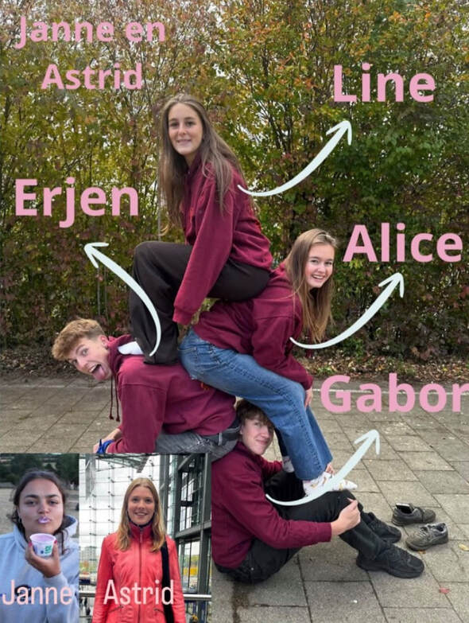
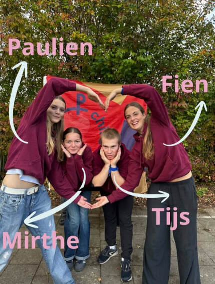
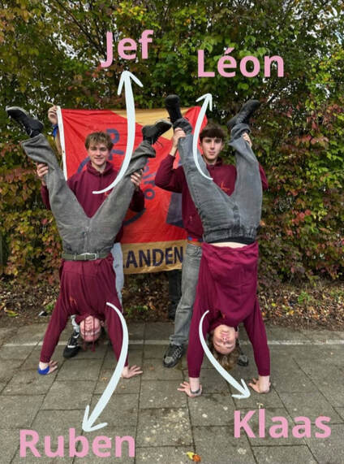
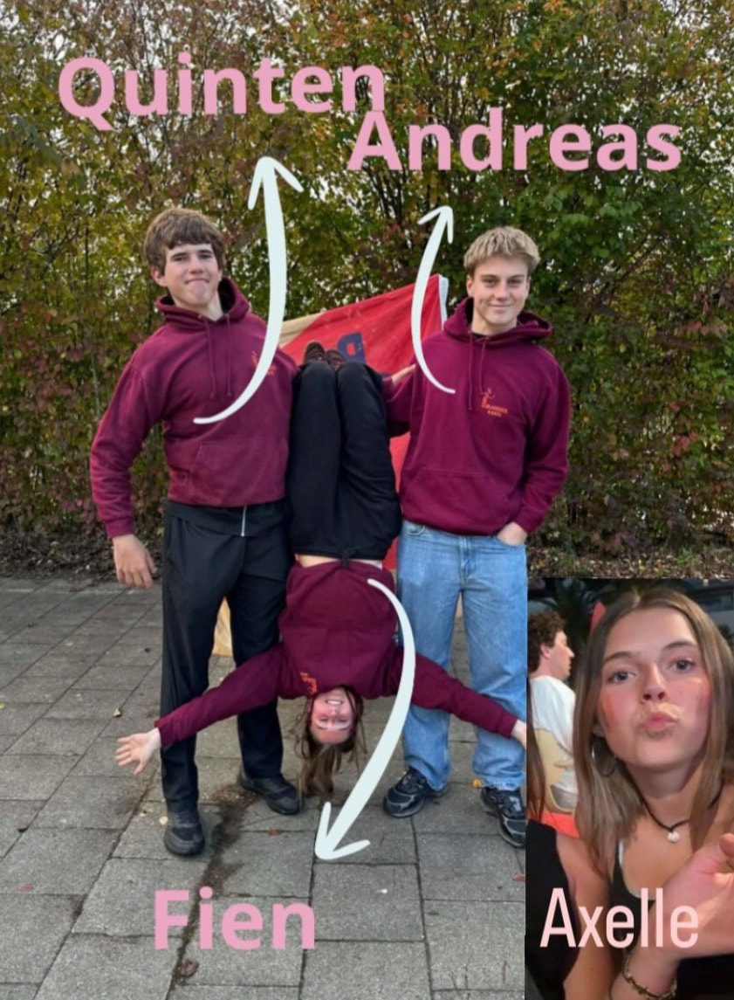
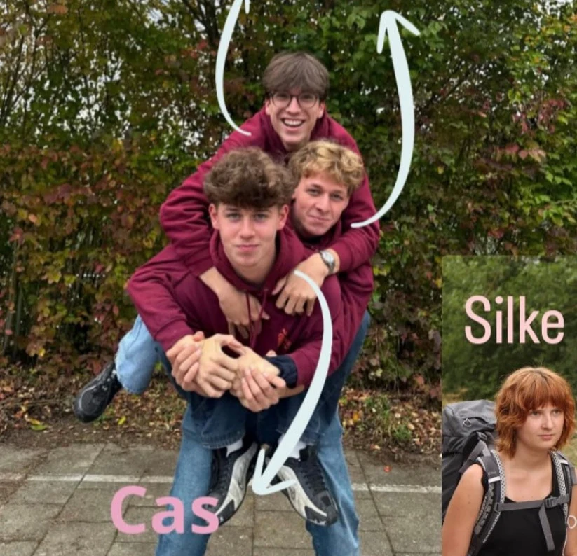
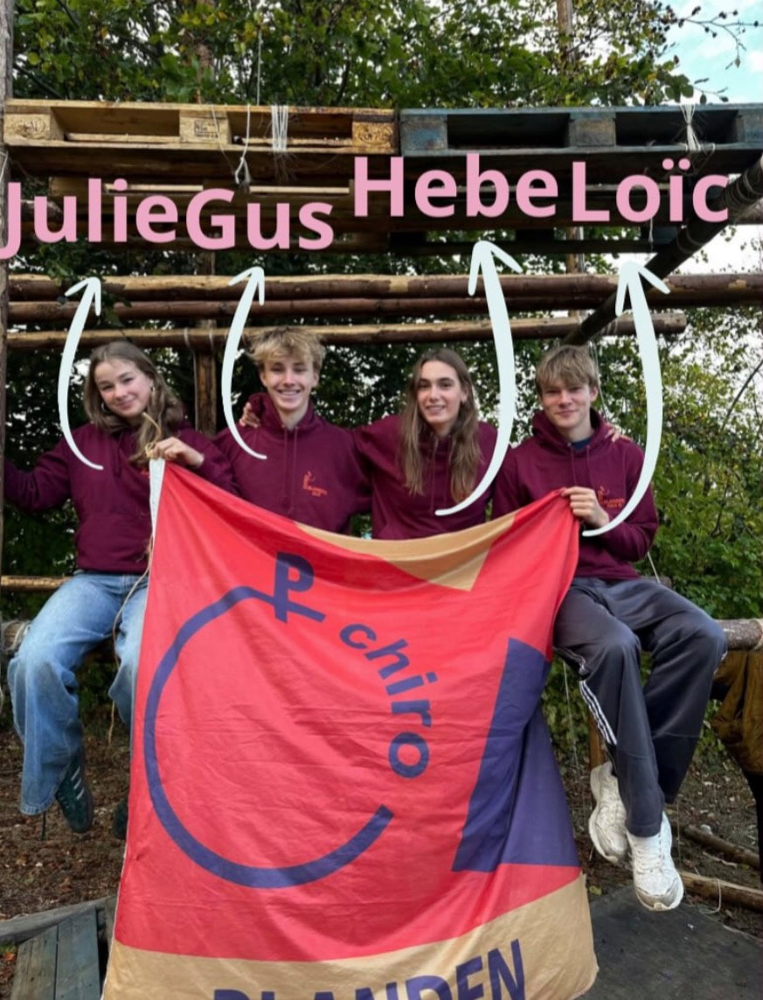
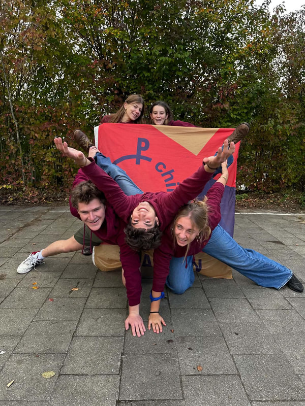
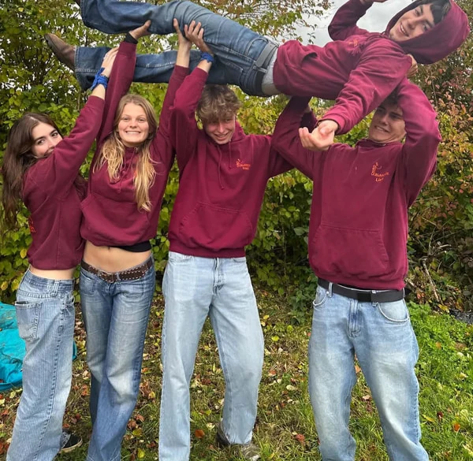

Praktische info
Wie, wat, wanneer en waar?
Iedereen die in het eerste leerjaar zit of ouder is, is welkom op de Chiro. En dat het hele jaar door!
Wie?
Iedereen vanaf het 1ste leerjaar. De groepen zijn ingedeeld volgens geboortejaar.
Wanneer?
Elke zondag om 14u30, behalve de laatste zondag van de maand.
Tot 18u00: Kiekeboes t.e.m. Rakkers
Tot 19u00: Tippers t.e.m. Aspi's
Wat?
Spel en plezier, een hele namiddag lang!
Waar?
Kartuizersstraat 1
3052 Blanden
Groepsindeling
In welke groep zit ik?
De groepen zijn ingedeeld volgens geboortejaar. Klik op een groep om hun leiding te zien.









Hoe geraak je er?
Chiro Blanden, Kartuizersstraat 1, 3052 Blanden (Oud-Heverlee)
Goed om te weten
Uniform, inschrijving en verzekering
Is er een uniform?
Chiro Blanden heeft geen uniform, enkel het sjaaltje is verplicht. Het sjaaltje is elke zondag verkrijgbaar bij de leiding en kost maar € 1,50. Onze eigen chiropull en -t-shirt zijn volledig vrijblijvend en ook verkrijgbaar bij de leiding.
Andere chirokledij zoals hemd, broek of rok vind je bij De Banier (www.debanier.be) en is fijn om er extra bij te dragen!
Andere chirokledij zoals hemd, broek of rok vind je bij De Banier (www.debanier.be) en is fijn om er extra bij te dragen!
Hoe schrijf ik in?
Je mag elke zondag eens langskomen om te ervaren of een Chironamiddag vol plezier iets voor je is (natuurlijk is dat zo!). Als je in de Chiro wil blijven, betaal je € 60 inschrijvingsgeld. Dat bedrag omvat zowel het verzekeringsgeld als een drankje voor elke zondag. Alle info staat op de pagina Inschrijven.
Ben ik verzekerd?
Via de Chiro ben je steeds verzekerd voor ongevallen die gebeuren van, naar of op de Chiro. Meestal regelt de leiding de verzekering al. Heb je de ongevalsverklaring later toch nog nodig? Neem dan contact op met de leiding van de groep. Nadat het formulier door een arts en een leiding ingevuld is, stuur je het zo snel mogelijk naar het adres van de Chiro. De verzekeringsmaatschappij vraagt daarna alle kostennota's op om de kosten te dekken.
Klaar om in te schrijven?
Het inschrijvingsformulier is voor oude én nieuwe leden.